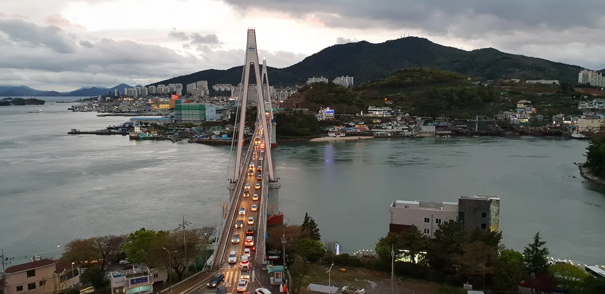
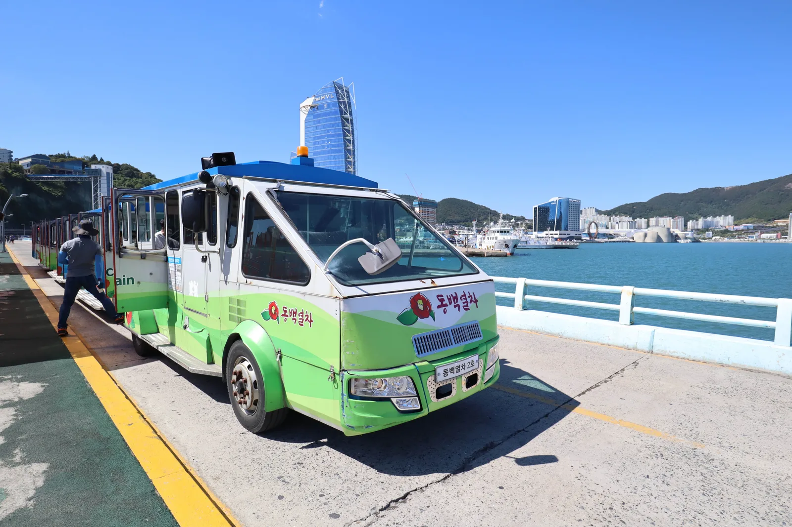

▲ 돌산공원에서 바라본 돌산대교. 여수 밤바다를 대표하는 야경 명소다 ⓒ Wikimedia Commons (CC BY-SA 3.0)
여수 밤바다를 이야기할 때 빠지지 않는 두 곳, 돌산공원과 오동도는 주차 요금 체계가 동일하다. 하지만 실제 방문 시 체감하는 소요 시간은 완전히 다르다.
1. 돌산공원 — 여수 밤바다의 명당
돌산공원은 돌산대교의 야경을 가장 아름답게 감상할 수 있는 명소로 꼽힌다. 다양한 전망 포인트와 편리한 주차 시설을 갖추고 있어, 여수 밤바다를 처음 찾는 여행자에게도 접근이 쉬운 편이다. 공영주차장은 1시간까지 무료이며, 이후 10분당 200원의 요금이 부과된다.
2. 오동도 — 같은 요금, 다른 소요 시간

▲ 여수 오동도 등대. 섬 전체가 동백나무로 뒤덮인 국내 최고 동백 명소다 ⓒ CarPrism
오동도 역시 주차 요금은 돌산공원과 동일하게 1시간 무료, 이후 10분당 200원이다. 다만 오동도는 섬 입구에서 중심부까지 도보로 약 15분이 걸린다는 점을 감안해야 한다. 시간을 아끼고 싶다면 동백열차를 이용해 5분 만에 이동할 수 있다. 섬 전체에 약 3,000그루의 동백나무가 자생하는 국내 최고 동백 명소로, 입장료는 무료다.
3. 1시간 무료, 실제로는 얼마나 남을까

▲ 여수 해안 방파제. 오동도는 도보 이동 시간까지 감안하면 1시간 무료 주차가 빠듯할 수 있다 ⓒ CarPrism
돌산공원은 주차 후 바로 전망 포인트로 이동할 수 있어 1시간 무료 시간이 상대적으로 여유 있다. 반면 오동도는 도보 이동(왕복 약 30분)까지 포함하면, 섬 안에서 실제로 둘러볼 수 있는 시간은 1시간에서 크게 줄어든다. 동백열차를 활용하면 이 시간을 아껴 오동도 내부를 더 여유 있게 관람할 수 있다.
4. 야경 감상 팁 — 일몰 30분 전이 기준
야경 감상 팁
- 일몰 30분 전 도착해 노을을 먼저 감상한다.
- 어두워질 때까지 자리를 지키면 노을과 야경을 연달아 즐길 수 있다.
- 돌산공원과 오동도를 하루에 묶는다면 동선 순서를 미리 정해두자.

▲ 오동도 동백열차. 도보 15분 거리를 5분 만에 주파할 수 있어 시간을 아끼려는 방문객들이 즐겨 이용한다 ⓒ Wikimedia Commons (CC BY-SA 4.0)
5. 정리
체크포인트
- 돌산공원·오동도 주차는 1시간 무료, 이후 10분당 200원으로 동일하다.
- 오동도는 도보 15분 또는 동백열차 5분이 소요된다는 점이 다르다.
- 오동도 입장료는 무료이며 동백 명소로 유명하다.
- 야경은 일몰 30분 전 도착이 가장 인기 있는 방법이다.